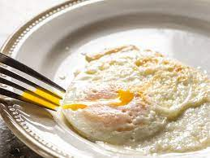

Perfect Eggs

Description
I eat eggs everyday. They are one of the best and easiest breakfast out there! But I can not stand scrambled eggs. I like my eggs cooked so that the yolk is slightly runny, kind of like the consistency of cold olive oil.
When you cook eggs too much they become rubbery and disgusting. I will walk you through how I cook the perfect eggs.
Ingredients
- 3 Eggs
- Pam cooking spray
- Salt and Pepper
- Cast Iron Skillet
Steps
- Spray the cast iron skillet with pam.
- Crack 3 eggs into the skillet.
- Turn on stove to high heat.
- Cook until egg whites are almost completely cooked, then flip without breaking the yolk.
- Turn off stove and let eggs lit on hot skillet until yolks are cooked to your liking. For me this is between 30 second and 1 minute.
- Place eggs onto plate and sprinkle with salt and pepper.
- Enjoy your perfectly cooked eggs!